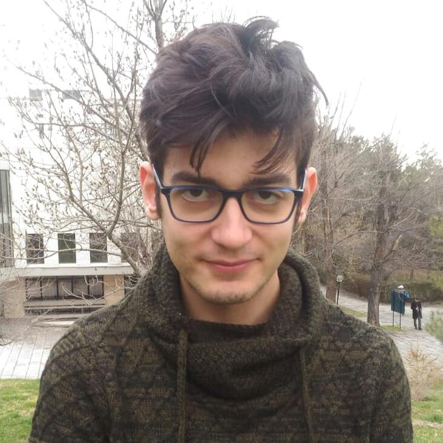

Boosting Unsupervised Video Instance Segmentation with Automatic Quality-Guided Self-Training
WACV 2026

You can call me Onur
I am a PhD student in Computer Science at the Technical University of Denmark (DTU), researching data-centric multimodal learning, test-time scaling, and test-time compute. I am advised by Dim Papadopoulos and Desmond Elliott.
My current research focuses on developing methods that improve model performance through better data utilization and adaptive computation at test time, particularly in multimodal learning scenarios.
Before starting my PhD, I completed my MSc focusing on deep generative models for inverse problems. I also worked as a Deep Learning and Computer Vision Engineer at Kuartis, developing perception systems for surveillance and autonomous vehicles.